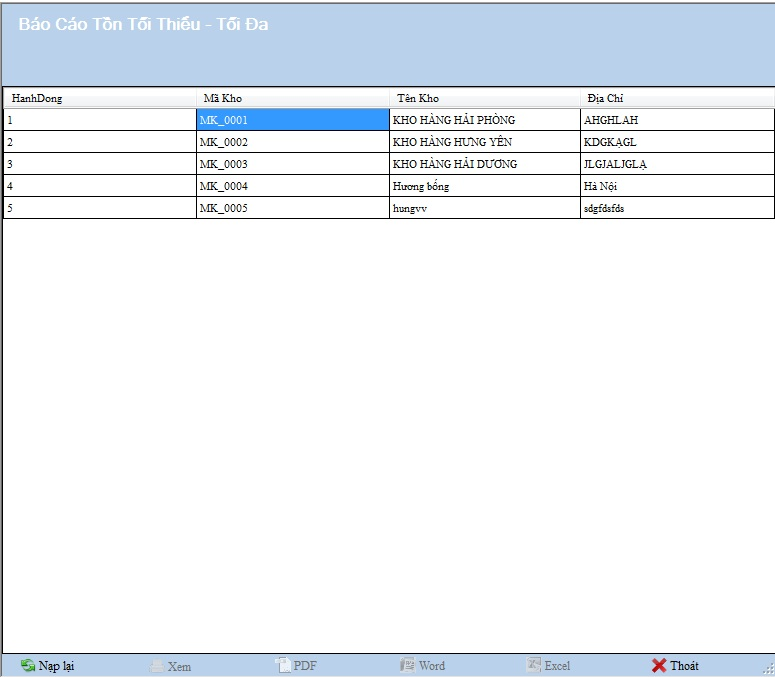

Cách thao tác với Báo cáo tồn tối thiểu tối đa
Vào Hệ thống ->Báo cáo ->Tồn kho-> Mức tồn tối đa tối thiểu

Thanh tiêu đề: Chứa tên của danh mục đang làm việc.
- Chọn PDF trong thanh công cụ bên dưới nếu muốn xuất báo cáo ra file PDF .
- Chọn Word trong thanh công cụ bên dưới nếu muốn xuất báo cáo ra file Word.
- Chọn Excel trong thanh công cụ bên dưới nếu muốn xuất báo cáo ra file Excel.
- Chọn Xem dưới thanh công cụ để xem chi tiết

- Chọn Thoát để trở lại Danh mục quản lý .